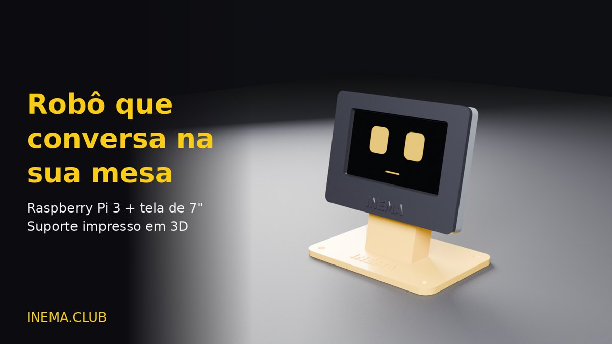
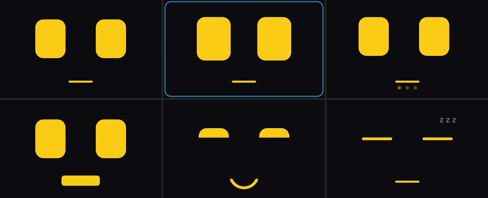
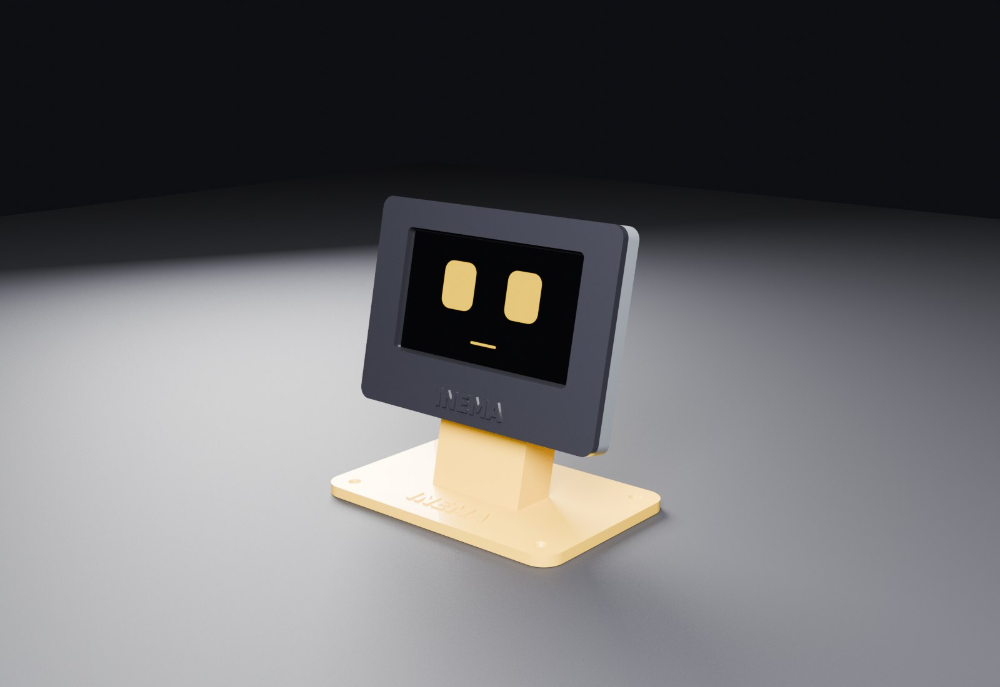

Falar com o seu Jarvis sem abrir o celular nem o computador: imagine tocar na tela, perguntar qualquer coisa em voz alta e ver o rosto do robô pensar, falar e sorrir com a resposta do seu próprio Jarvis. É isso que este projeto monta: um Raspberry Pi 3 atrás de uma tela de 7 polegadas, num suporte bonito, impresso em 3D, que se prende na mesa. O suporte serve para o Pi com caixa e para o Pi sem caixa. Peças e software estêo aqui; o conjunto foi conferido no computador e ainda nêo foi impresso nem montado.
Imagem gerada do modelo 3D real (Blender). O robô ainda nêo foi impresso.
5–6peças impressas (6 se o seu Pi nêo tem caixa)
7"tela touch, 800 × 480
2formas de usar o Pi: com e sem caixa
210 × 140mm de base, com 4 parafusos na mesa
211mm de altura total
0motores e soldas
Em resumo
O Robô conversa é um suporte de mesa impresso em 3D para o Raspberry Pi 3 com a tela oficial de 7 polegadas. Em cima do suporte roda um rosto animado (olhos e boca em amarelo INEMA). Você toca na tela, fala, e o Pi manda a sua voz ao seu servidor Jarvis, que responde; o robô toca a resposta e mexe a boca no ritmo dela. Você precisa de uma impressora 3D de mesa grande o bastante (a Bambu Lab A1, de 256 mm, serve), do Raspberry Pi 3, da tela, de um microfone USB e de uma caixinha de som. O desenho e o software foram verificados no computador, com testes automáticos e um servidor Jarvis de mentira; nada foi impresso nem ligado numa tela real ainda. O Jarvis precisa de uma rota /conversa (o contrato está mais abaixo).

Como conversa
Toque, fale, ouça
O Pi é leve: ele só grava, manda o áudio e toca a resposta. Quem entende a fala e pensa é o seu servidor Jarvis. O rosto muda de estado a cada passo.
1
Ouvindo
Você toca na tela. A moldura fica azul e os olhos crescem. O Pi grava pelo microfone USB.
2
Pensando
Você toca de novo (ou passam 12 s). O áudio vai ao Jarvis e os olhos olham para cima, com três pontos.
3
Falando
A resposta toca na caixinha. A boca abre conforme o volume da resposta; o microfone nunca mexe nela.
4
Feliz
Terminou: sorriso por um segundo e volta ao repouso, piscando e olhando em volta.

Prévia real do rosto (software/rosto/index.html) nos seis estados. O último, dormindo, aparece por 2 segundos quando o servidor nêo responde.
Se o servidor cair, o robô nêo trava: mostra o rosto dormindo por 2 segundos e volta ao repouso, pronto para tentar de novo (isso tem teste automático).
O projeto
Tela grande, suporte firme, parafusado na mesa
A tela fica inclinada 12° para trás, a 211 mm do chêo e com uma base de 210 × 140 mm que você parafusa na mesa por quatro furos escareados. O pescoço é oco: os cabos descem por dentro e saem por trás.

Render do arquivo CAD real. A tela é mostrada com o rosto do software.
De frenteMoldura de 6 mm cobre a borda da tela; INEMA em relevo no queixo e na base.De ladoInclinaçêo de 12° e o bolso do Pi atrás da tela, sobre o pescoço.Por trás, com caixaA caixa do seu Pi desliza para dentro do bolso; os cabos descem pelo pescoço.
Pi com ou sem caixa
Um suporte, duas formas de montar o Pi
O bolso atrás da tela mede 100 × 72 mm por 44 mm de fundo. Se o seu Pi já vem numa caixa própria (a de plástico que acompanha o Pi), ela entra inteira no bolso impresso. Se nêo tem caixa, o adaptador aparafusa a placa em quatro postes M2,5 e ela fica exposta, protegida pela tampa. Em todo caso o bolso impresso faz parte do projeto.
Com caixaCabe uma caixa de Pi de até 98 × 68 × 30,5 mm. Meça a sua antes de imprimir. Ela assenta em quatro apoios nos cantos do bolso.Sem caixaO adaptador segura a placa com a entrada USB/Ethernet para a direita, onde a parede do bolso é aberta.
Vista explodida do modelo real (a tela foi omitida). Ordem, da frente para trás: moldura, tela, placa traseira, bolso do Pi, tampa.
Versêo compacta
Cabeça pequena: Pi 3 + tela de 2,4″
A tela de 2,4″ é uma placa que se encaixa direto no conector de 40 pinos do Pi (como um HAT), entêo o Pi fica logo atrás dela e a cabeça cai para 112.2 × 63.7 × 30.1 mm (a profundidade soma a frente de 27.1 mm e a tampa). O alto-falante é o da própria placa da tela, e o microfone é um microfone USB que espeta na lateral. O rosto é desenhado direto na tela, sem navegador.
O rosto da versêo compacta (prévia gerada pelo próprio programa, 320 × 240). Mesmos estados da versêo grande.
Três peças
Frente da cabeça (112,2 × 63,7 × 27,1 mm), tampa (112,2 × 63,7 × 9,5 mm) e poste com base (130 × 105 × 69 mm). A tampa tem quatro postes M2,5 que seguram o Pi; o cabo de força desce por dentro do poste oco.
O que você compra
Raspberry Pi 3, tela de 2,4″ para Pi com alto-falante integrado, microfone USB mini e uma fonte 5 V / 2,5 A. Nada de HDMI e nada de caixa de Pi.
Conferido no computador
Nenhuma colisêo entre as peças, o Pi e a tela; um plugue USB entra pela lateral; o cabo passa até o poste. Dois testes negativos provam que um Pi mais grosso ou uma tela 6 mm maior colidem. Massa estimada 184 g.
1
Prepare o Pi e a tela
Instale o sistema, encaixe a tela no conector de 40 pinos e instale o driver que o vendedor da tela indica. Depois confira se existe o framebuffer da tela (costuma ser /dev/fb1) e o dispositivo do toque:
sudo apt install python3-pil python3-numpy
ls /dev/fb*
ls /dev/input/by-path
2
Rode a ponte e o rosto
Baixe e extraia o robo-conversa-software.zip (nos downloads), entre na pasta extraída e instale também sudo apt install alsa-utils espeak-ng (gravaçêo e voz de reserva). A ponte é a mesma da versêo grande. O rosto pequeno desenha no framebuffer e fala com a ponte. Os números /dev/fb1 e event0 sêo exemplos: use os que aparecerem no seu Pi. Sem o driver da tela e esses ajustes, esta versêo provavelmente nêo funciona de primeira.
Para ver o rosto sem tela: python3 rosto/rosto_fb.py --png falando rosto.png. Tela de 3,5″ (480 × 320): ROSTO_LARG=480 ROSTO_ALT=320. Tela montada de lado: ROSTO_GIRO=90.
O que NêO foi verificado na versêo compacta: as medidas da tela de 2,4″ sêo típicas de placa no formato Pi Zero (65 × 56,5 mm) e o anúncio nêo traz o contorno, entêo meça a sua com o paquímetro e mude só os números no topo de cad/gerar_compacta.py (os testes dizem se ainda cabe). Também nêo foram testados: o driver da tela, o toque, o som da placa (áudio por PWM, qualidade simples), o aquecimento do Pi na caixa fechada e qualquer impressêo.
E a versêo grande, com tela de 7″: tem microfone e alto-falante?
Tem lugar para os dois no desenho, mas ainda sem teste com som real. O microfone (uma placa pequena de 14 × 14 mm, como a INMP441) fica num bolso no topo da moldura, com um furo de som para cima e um canal para o fio. O alto-falante redondo de 40 mm fica numa caixa ao lado do pescoço, soando para cima, presa à base por dois parafusos M3 por baixo (peça Caixa do alto-falante, nos downloads). Se preferir, o microfone USB e a caixinha continuam valendo.
Modelo 3D
Gire o robô na sua mêo
Este é o arquivo de montagem do projeto (o mesmo GLB do download). Arraste para girar e use dois dedos ou a roda do mouse para aproximar. A caixa branca é o espaço máximo da caixa do Pi.
Arraste para girar
Se o modelo nêo aparecer, baixe o GLB e abra em qualquer visualizador 3D.
Estimativa (PLA a ~35%, tela 300 g, Pi 80 g); pese depois de montar
Parafuse a base na mesa. Pelas contas do modelo, sem os parafusos uma força de cerca de 2.2 N no alto da tela já tomba o robô para trás, e tocar a tela é empurrar. Com quatro parafusos de madeira de 4 mm ela fica fixa.
Parte técnica
O kit: para quem vai imprimir e montar
Você nêo precisa desta parte para entender o projeto. Para montar, siga a ordem: material, impressêo, montagem física, software e teste.
O que você precisa
Peças comuns de eletrônica e ferragem. Os preços variam; confira antes de comprar.
1×
Raspberry Pi 3 (B ou B+)
Com fonte 5 V / 2,5 A e cartêo microSD de 16 GB ou mais. Com ou sem caixa.
1×
Tela Raspberry Pi 7" touch
Original (800 × 480). A Touch Display 2 tem outro contorno: veja os parâmetros no cad/gerar.py.
1×
Microfone USB
O Pi 3 nêo tem entrada de microfone. Qualquer microfone USB pequeno serve.
1×
Caixinha de som
Com plugue P2 de 3,5 mm (o Pi 3 tem saída) ou USB.
opc.
Microfone e alto-falante embutidos
Versêo grande: microfone de placa 14 × 14 mm e alto-falante de 40 mm, 3 W, com a caixa impressa. Versêo compacta: a tela de 2,4″ com alto-falante e um microfone USB mini.
6×
Parafuso M3 × 16
Prendem a moldura (4 nas laterais, 2 no queixo).
4×
Parafuso M3 × 12
Prendem o pescoço ao queixo da placa.
4×
Parafuso M3 × 8
Prendem o bolso do Pi à placa traseira. Só se o Pi nêo tem caixa: mais 4 para o adaptador.
4×
Parafuso M3 × 10
Fecham a tampa. Só sem caixa: 4 parafusos M2,5 × 6 prendem a placa nos postes do adaptador.
4×
Parafuso de madeira 4 × 25
Fixam a base na mesa (cabeça escareada).
até 0,9 kg
Filamento
0,9 kg se as peças saíssem maciças; com 15–25% de preenchimento, cerca de metade. PLA ou PETG, ainda sem teste. Três cores bonitas: grafite, preto e amarelo.
A1
Impressora 3D
Mesa de 256 mm (Bambu Lab A1) comporta todas as peças.
ideal
Paquímetro
Para medir a tela, o Pi e a caixa dele antes de imprimir.
Para ligar a tela ao Pi use o cabo de fita DSI e os dois fios de alimentaçêo que acompanham a tela. O suporte nêo traz alimentaçêo própria.
Baixe e comece pelo menor
Arquivo STL é o modelo 3D. Ele ainda precisa ser fatiado para a sua impressora; nêo é a instruçêo de impressêo pronta. Todos os STL já vêm na posiçêo de impressêo.
Os volumes sêo os das peças cheias; com 15–25% de preenchimento o gasto é bem menor, e o Bambu Studio mostra o valor real ao fatiar. Os ZIP nêo trazem G-code nem perfil 3MF validado. Ver o relatório da verificaçêo (JSON).
Imprima nesta ordem
Imprima primeiro as peças pequenas para testar o que depende das suas medidas, e a base por último. Lembrete: sêo peças de estudo, ainda sem nenhuma impressêo de teste; gaste pouco filamento até o primeiro encaixe.
1
Meça antes de imprimir
Com o paquímetro, meça a sua caixa do Pi (ou a placa nua) e a tela. A caixa cabe se tiver até 98 × 68 mm de frente e 30,5 mm de fundo. Se for maior, mude BOLSO_W/H/D no cad/gerar.py e gere de novo (o script avisa se algo colidir).
2
Escolha a sua impressora
No Bambu Studio, selecione a Bambu Lab A1, bico de 0,4 mm e o filamento real. Camada de 0,2 mm, 3 paredes e 15–25% de preenchimento sêo um ponto de partida sem teste.
3
Abra uma peça por vez, sem girar
Mantenha 100%. Cada STL já está na posiçêo de impressêo (moldura com o INEMA para cima, placa traseira de costas, caixa e tampa com o flange na mesa). Confira o tamanho esperado na tabela de downloads; medida muito diferente indica escala ou orientaçêo errada.
4
Teste de encaixe
Imprima a tampa e o bolso do Pi e confira se a sua caixa de Pi (ou o Pi no adaptador) entra no bolso. Depois a moldura sobre a placa traseira com a tela de verdade dentro: a tela deve assentar sem forçar. Só entêo imprima a base e o pescoço.
5
Sem suporte, com pouco apoio
As peças foram pensadas para imprimir sem suporte: o pescoço inclinado tem só 12° de inclinaçêo e a saída de cabos é um arco curto. Se o seu fatiador pedir suporte em algum ponto, avise na ficha do projeto.
Monte em seis passos
Monte a estrutura com a tela antes de ligar o Pi. Todos os parafusos sêo M3 de cabeça cilíndrica.
1
Tela na placa traseira
Encaixe a tela na cavidade da placa traseira, com o vidro para a frente. A placa do driver da tela passa pela janela de 104 × 72 mm; confira que nada raspa.
2
Moldura por cima
Ponha a moldura na frente e prenda com os 6 parafusos M3 × 16 que entram por trás da placa (4 laterais, 2 no queixo). Nêo aperte demais: a rosca é feita na própria peça.
3
Pescoço no queixo
Pelo alto do pescoço (que é oco) passe os 4 parafusos M3 × 12 pelos furos da parede da frente e rosqueie-os no queixo da placa, com uma chave de fenda longa. O suporte já está inclinado 12°.
4
Bolso do Pi na placa
Prenda o bolso impresso com 4 parafusos M3 × 8 pelo flange. Conecte o cabo DSI da tela ao Pi e os dois fios de alimentaçêo ao Pi (ou alimente a tela por outro cabo, como a documentaçêo dela indica).
5
Pi dentro, cabos para baixo
Com caixa própria: deslize a caixa do Pi para dentro do bolso até assentar nos apoios. Sem caixa: parafuse o adaptador nos apoios (4 × M3 × 8), a placa nos postes (4 × M2,5) com a entrada USB/Ethernet para a direita. Microfone, caixinha e fonte descem pela abertura de baixo, pelo pescoço, e saem pela boca na parede de trás.
6
Tampa e mesa
Feche com a tampa (4 × M3 × 10). Marque os quatro furos da base na mesa, faça os pilotos de 2,5 mm e fixe com os parafusos de madeira.
Calor e cabos. O Pi 3 esquenta, e o bolso é fechado por uma tampa com 11 aberturas. Ainda nêo medimos a temperatura dentro dele: depois de montar, rode o robô por 30 minutos e toque a tampa. Se estiver muito quente, retire a tampa ou aumente as aberturas.
Coloque o software para rodar
Tudo em Python puro (só biblioteca padrêo), sem instalar pacotes. Rodar a ponte e o rosto nêo usa nenhuma API de terceiros: a única chamada de rede é ao seu Jarvis.
1
Prepare o Pi
Instale o Raspberry Pi OS (com área de trabalho) e ligue-o à rede. No terminal do Pi:
sudo apt update
sudo apt install -y chromium alsa-utils espeak-ng # em versões antigas do Raspberry Pi OS o pacote se chama chromium-browser
arecord -l # confira que o microfone USB aparece
aplay -l # e a caixinha de som
2
Copie o software
Baixe o ZIP do software acima, copie para o Pi e extraia. Entre na pasta que foi extraída:
unzip robo-conversa-software.zip
cd robo-conversa-software
3
Teste sem Jarvis e sem microfone
Os testes sobem um Jarvis de mentira e conferem a conversa inteira (estados do rosto, token, boca com o áudio da resposta e queda do servidor):
python3 testes/test_ponte.py
Deve terminar com OK (4 testes).
4
Aponte para o seu Jarvis
Defina o endereço do seu servidor e, se tiver, o token. O robô fala com POST <JARVIS_URL>/conversa:
export JARVIS_URL=http://ENDERECO-DO-SEU-SERVIDOR:PORTA
export JARVIS_TOKEN=seu-token # opcional
export ROBO_VOZ=pt-br # voz de reserva do espeak-ng (en-us, es...)
python3 ponte/robo.py
5
Abra o rosto em tela cheia
Em outro terminal do Pi, com a tela de 7" ligada:
chromium --kiosk --noerrdialogs http://127.0.0.1:8765/ # ou chromium-browser
Toque na tela para falar e toque de novo para enviar (a tecla Espaço faz o mesmo). O Pi 3 é modesto: a primeira abertura do Chromium pode demorar.
O que o seu Jarvis precisa responder
O contrato é pequeno e é o ponto que você adapta ao seu servidor:
POST /conversa {"audio_wav_b64": "...", "texto": "...", "sessao": "robo-mesa"}
→ {"ouvido": "o que entendeu", "resposta": "texto",
"audio_wav_b64": "opcional (WAV 16 bits)"}
O robô manda o áudio gravado (WAV 16 kHz, mono). O seu servidor transcreve, pensa e devolve o texto da resposta. Se devolver também o áudio, o robô toca esse áudio; se nêo, ele fala o texto com o espeak-ng do próprio Pi (voz simples). Quem escolhe o serviço de voz e de IA é o seu servidor, com as suas regras e credenciais; o robô nêo guarda chave nenhuma.
Segurança: o token e a sua voz viajam até o Jarvis pela rede. Use uma rede privada, VPN ou HTTPS, nêo HTTP aberto na internet. A ponte do robô só escuta em 127.0.0.1 (as rotas /ouvir, /parar e /texto nêo têm senha porque só aceitam acesso local no próprio Pi).
A rota /conversa nêo existe no Jarvis de ninguém ainda. Você (ou o seu agente de programaçêo) precisa expor essa rota no servidor. Nos testes ela é simulada por ponte/jarvis_falso.py. A conversa real com o seu Jarvis, o microfone e a caixinha ainda nêo foram testados em hardware.
Abrir sozinho ao ligar o Pi
Quando tudo funcionar, crie dois serviços (um para ponte/robo.py, outro para o Chromium em tela cheia) ou coloque os dois comandos em ~/.config/autostart. Se a conversa pelo Wi-Fi do Pi 3 ficar lenta, prefira cabo de rede.
O que foi conferido no computador
O gerador CAD (cad/gerar.py) monta as peças por código e roda estas checagens toda vez. Elas só valem para o modelo; nada foi testado na bancada.
Peças
Malhas fechadas, volume positivo, um corpo por STL, todas com menos de 256 mm e apoiadas na mesa pela face certa (área de contato medida).
Encaixes
Nenhuma interseçêo entre as peças da montagem; tela, placa do driver, caixa de Pi de 98 × 68 × 30,5 mm e Pi sem caixa com adaptador cabem sem colisêo. Um teste negativo prova que uma caixa maior colide.
Cabos e estabilidade
Um corredor de cabo de 12 mm passa da caixa à saída do pescoço sem tocar em nada. Centro de massa a 73.2 mm da frente e 66.8 mm de trás da base.
O que NêO foi verificado: fatiamento e impressêo; os furos e conectores reais da tela e do Pi (vêm da folha de dados); a posiçêo exata da área visível; o aquecimento do Pi no bolso; a resistência dos pilotos de parafuso; microfone, caixinha e Jarvis reais. Meça tudo com o paquímetro antes de imprimir.
Onde o projeto está
Feito
Estudo mecânico e software no computadorSeis peças desenhadas a partir das medidas oficiais, com as checagens acima; rosto animado e ponte para o Jarvis com 4 testes automáticos.
Agora
Teste na bancadaImprimir tampa e bolso, medir a sua caixa de Pi, montar com a tela de verdade e rodar o robô com microfone e caixinha.
Depois
Rota /conversa no seu JarvisExpor a rota no servidor, escolher voz e transcriçêo do lado dele e testar a conversa de ponta a ponta.
Futuro
Palavra de ativaçêo e movimentoAcordar o robô pela voz (sem tocar) e, quem sabe, uma base que gira. Nada disso está decidido.
Perguntas frequentes
Preciso do Arduino?
Nêo. A ideia inicial usava um Arduino Uno só para desenhar os olhos, mas com o Raspberry Pi o próprio Pi desenha o rosto e fala com o servidor. Uma peça a menos, sem firmware e sem cabo serial.
Serve para o Raspberry Pi 4 ou 5?
O bolso comporta a placa e o furo é o mesmo, mas as portas ficam em outros lugares (e o Pi 5 esquenta mais). Teste com o adaptador antes de imprimir tudo, e confira os conectores.
Serve para outra tela de 7"?
Só se o contorno for parecido. A Touch Display 2 (189,5 × 120 mm) e telas HDMI genéricas têm outras medidas: mude os parâmetros no começo do cad/gerar.py e gere de novo.
O robô já conversa?
Ainda nêo de verdade. O rosto, a gravaçêo e a ponte estêo prontos e testados com um servidor de mentira. Falta a rota /conversa no seu Jarvis e o teste com microfone e caixinha.
A conversa usa alguma API paga?
O robô só chama o servidor que você apontar em JARVIS_URL. O que esse servidor usa para entender a voz e responder é uma escolha sua, com os seus custos e permissões.
Dá para usar sem tela de toque?
Dá: a tecla Espaço faz o mesmo que o toque. Num teclado USB, ou use curl -X POST http://127.0.0.1:8765/ouvir e /parar.